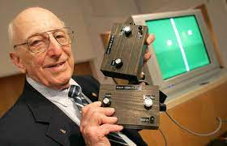

Um pouco da história do Surgimento dos Games
O físico William Higinbothan, o homem conhecido pela produção da primeira bomba atômica, foi o mesmo a ser o criador do Videogame, em 1958, mas sem saber o quanto sua obra era revolucionária não se preocupou em patenteá-la, assim não sendo considerado oficialmente a ser o primeiro homem a criar o Videogame.
Este produziu um jogo de tênis com apenas dois finos traços e uma bola, assim o batizando de Tennis Programming ou Tennis for Two. Esta criação surpreendeu a si mesmo, porém não foi o bastante para que o patenteásse e comercializá-lo.

E deste jogo bem primitivo, os jogos foram evoluindo, assim surgindo os jogos como os de damas e xadrez.
E em 1966, o engenheiro eletrônico Ralph Baer, considerado o pai dos consoles de jogos, mesmo com poucos recursos financeiros, teve a incrível ideia de criar um equipamento que fosse capaz de processar jogos eletrônicos por meio de uma ligação com a televisão.
E contando com a grande contribuição de seus amigos e companheiros de trabalho, em 1967, conseguiu produzir seu primeiro jogo, o chasing game', um jogo básico de Ping Pong, no qual duas barras quadradas podiam ser controladas pelos jogadores ao longo da tela.
E seu inventor o patenteou rapidamente, e logo após um ano, criou e expôs seu primeiro modelo de video game, chamado Brown Box, no qual correspondia a disputas de futebol, vôlei e tiro. Não foi o console mais comercializado e conhecido na época, porém foi um dos nossos ancestrais de consoles.
E assim a Magnavox (uma empresa sediada na Holanda, lançou ao público o primeiro console de videogame, o Odyssey 100. Assim convertendo-se de pouco em pouco ao longo dos anos, foi dando origem aos conhecidos Nintendos, PlayStations e Xbox de hoje.